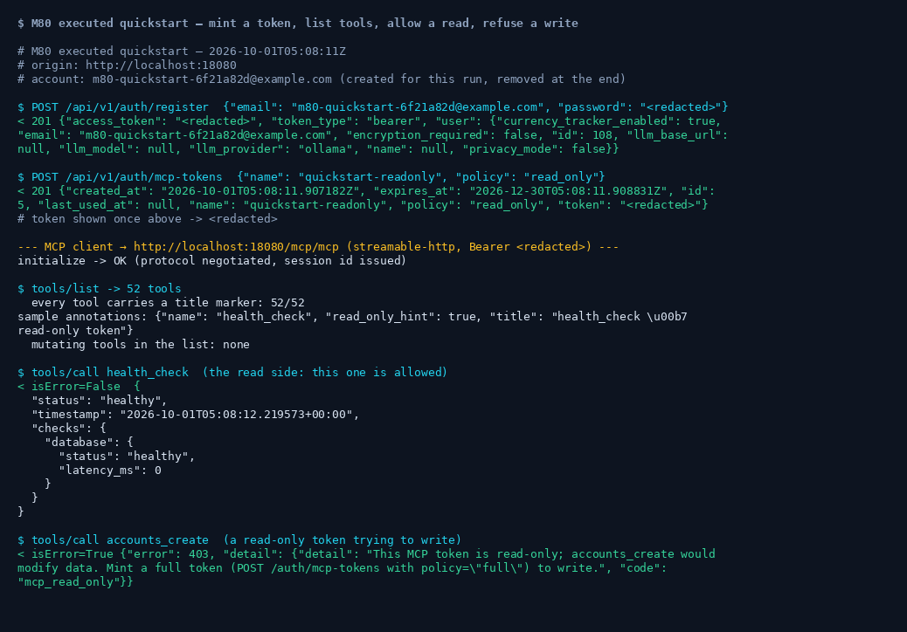
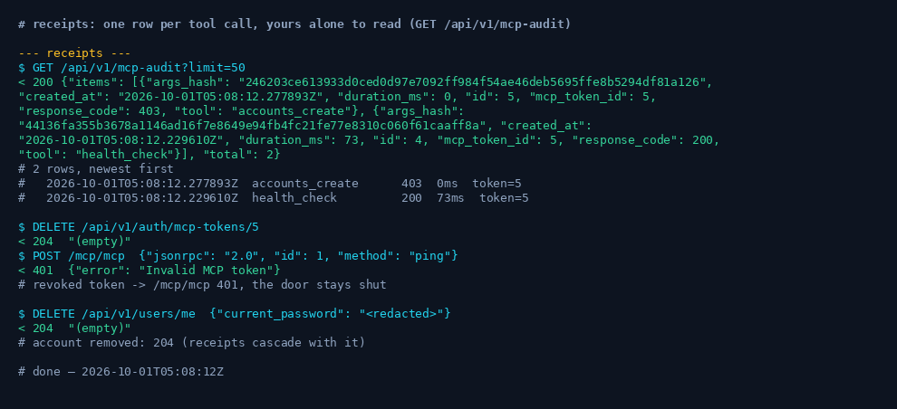

Your agent did this — watch it happen
You ask, your agent calls a tool, a receipt lands. A real run, step by step, with the transcript as proof.
-
What you asked for
Your agent — Claude, Cursor, or a script you wrote — has been handed a token you minted yourself, and you asked it a plain question about your own data. From here on there is no screen involved: everything below happened between your agent and your fin_tracker, and it was recorded whether or not you were watching.
-
What your agent actually called
The session opens, then the agent asks what it is allowed to do, and
tools/listanswers with 52 tools — every one of them read-only, because a read-only token is never shown the write tools at all; they are not in the list to begin with. A read then goes through (health_check, healthy, 73 ms), and an attempted write (accounts_create) gets 403: this token is read-only. That refusal is structural rather than polite — the same token cannot get a different answer on a second attempt.
-
The receipt it left behind
Every call writes one row: which tool, what it answered, how long it took, and which token carried it. Two calls, two receipts, newest first —
health_checkat 200 in 73 ms,accounts_createat 403 in 0 ms. Arguments are hashed rather than stored, so a receipt can never leak a password you handed your agent, and when you revoke the token the rows it produced stay with your account.
-
Do it against your own data
Mint your own token, point your client at the MCP endpoint, and ask it something real. The agent integration guide explains what each policy allows before you hand one over, and Configuration (MCP) has the exact request shapes if you would rather read them first.